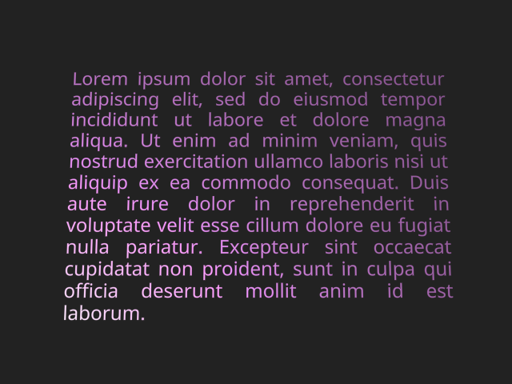
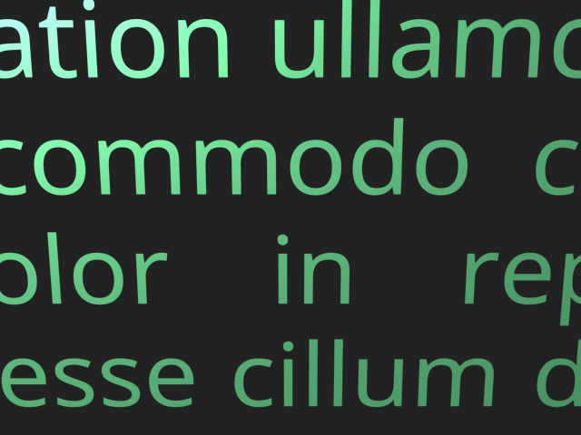
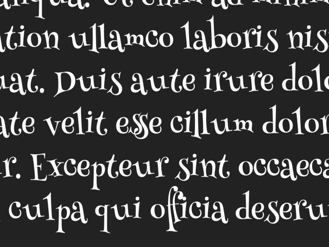
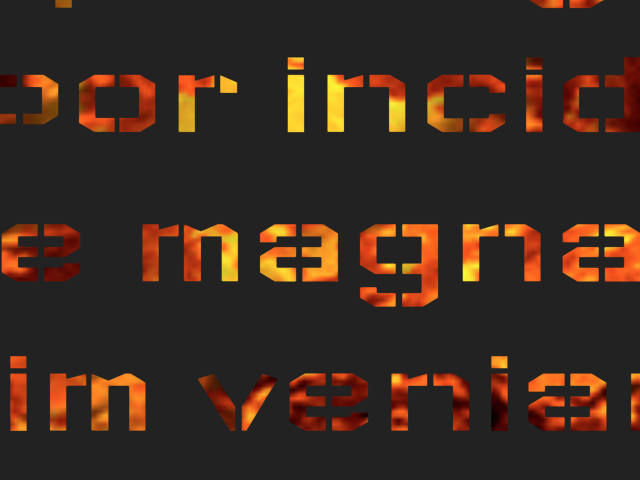
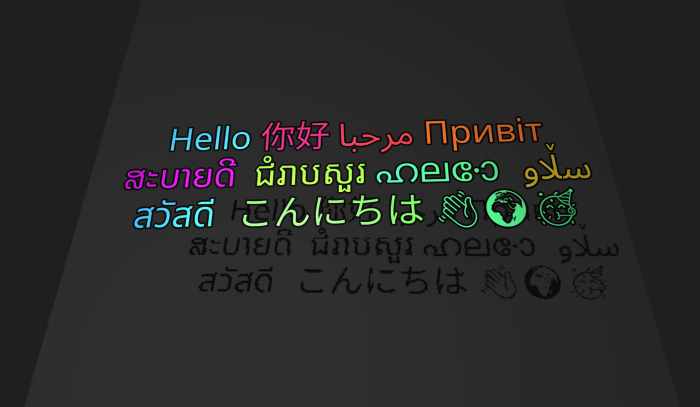

Troika Text for Three.js¶
The troika-three-text package provides high quality text rendering in Three.js scenes, using signed distance fields (SDF) and antialiasing using standard derivatives.
Rather than relying on pre-generated SDF textures, this parses font files (.ttf, .otf, .woff) directly using Typr, and generates the SDF atlas for glyphs on-the-fly as they are used. It also handles proper kerning, ligature glyph substitution, right-to-left/bidirectional layout, joined scripts like Arabic, and will automatically load fallback fonts for full unicode coverage. All font parsing, SDF generation, and glyph layout is performed in a web worker to prevent frame drops.
Once the SDFs are generated, it assembles a geometry that positions all the glyphs, and patches any Three.js Material with the proper shader code for rendering the SDFs. This means you can still benefit from all the features of Three.js's built-in materials like lighting, physically-based rendering, shadows, and fog.
Demos¶
- With the Troika scene management framework
- With react-three-fiber
- With a video texture
- With the Material Icons font
- With in-place editing
With Other Frameworks¶
- In the
dreiutilities for react-three-fiber - As an A-Frame component
- As a Web Component in three-elements
Screenshots¶





Installation¶
Get it from NPM:
npm install troika-three-text
You will also need to install a compatible version of Three.js; see the notes on Three.js versions in the Getting Started docs for details.
npm install three
Usage¶
import {Text} from 'troika-three-text'
You can then use the Text class like any other Three.js mesh:
// Create:
const myText = new Text()
myScene.add(myText)
// Set properties to configure:
myText.text = 'Hello world!'
myText.fontSize = 0.2
myText.position.z = -2
myText.color = 0x9966FF
// Update the rendering:
myText.sync()
It's a good idea to call the .sync() method after changing any properties that would affect the text's layout. If you don't, it will be called automatically on the next render frame, but calling it yourself can get the result sooner.
When you're done with the Text instance, be sure to call dispose on it to prevent a memory leak:
myScene.remove(myText)
myText.dispose()
Supported properties¶
Instances of Text support the following configuration properties:
text¶
The string of text to be rendered. Newlines and repeating whitespace characters are honored.
Default: none
anchorX¶
Defines the horizontal position in the text block that should line up with the local origin. Can be specified as a numeric x position in local units, a string percentage of the total text block width e.g. '25%', or one of the following keyword strings: 'left', 'center', or 'right'.
Default: 0
anchorY¶
Defines the vertical position in the text block that should line up with the local origin. Can be specified as a numeric y position in local units (note: down is negative y), a string percentage of the total text block height e.g. '25%', or one of the following keyword strings: 'top', 'top-baseline', 'top-cap', 'top-ex', 'middle', 'bottom-baseline', or 'bottom'.
Default: 0
clipRect¶
If specified, defines the [minX, minY, maxX, maxY] of a rectangle outside of which all pixels will be discarded. This can be used for example to clip overflowing text when whiteSpace='nowrap'.
Default: none
color¶
This is a shortcut for setting the color of the text's material. You can use this if you don't want to specify a whole custom material and just want to change its color.
Use the material property if you want to control aspects of the material other than its color.
Default: none - uses the color of the material
curveRadius¶
Defines a cylindrical radius along which the text's plane will be curved. Positive numbers put the cylinder's centerline (oriented vertically) that distance in front of the text, for a concave curvature, while negative numbers put it behind the text for a convex curvature. The centerline will be aligned with the text's local origin; you can use anchorX to offset it.
Since each glyph is by default rendered with a simple quad, each glyph remains a flat plane internally. You can use glyphGeometryDetail to add more vertices for curvature inside glyphs.
Default: 0
depthOffset¶
This is a shortcut for setting the material's polygonOffset and related properties, which can be useful in preventing z-fighting when this text is laid on top of another plane in the scene. Positive numbers are further from the camera, negatives closer.
Be aware that while this can help with z-fighting, it does not affect the rendering order; if the text renders before the content behind it, you may see antialiasing pixels that appear too dark or light. You may need to also change the text mesh's renderOrder, or set its z position a fraction closer to the camera, to ensure the text renders after background objects.
Default: 0
direction¶
Sets the base direction for the text. The default value of "auto" will choose a direction based on the text's content according to the bidi spec. A value of "ltr" or "rtl" will force the direction.
Default: 'auto'
fillOpacity¶
Controls the opacity of just the glyph's fill area, separate from any configured strokeOpacity, outlineOpacity, and the material's opacity. A fillOpacity of 0 will make the fill invisible, leaving just the stroke and/or outline.
Default: 1
font¶
The URL of a custom font file to be used. Supported font formats are: * .ttf * .otf * .woff (.woff2 is not supported)
Default: The Roboto font loaded from Google Fonts CDN
fontSize¶
The em-height at which to render the font, in local world units.
Default: 0.1
fontStyle¶
Either "italic" or "normal". Currently only used to select the preferred style for the fallback Unicode fonts.
Default: "normal"
fontWeight¶
A numeric font weight, "normal", or "bold". Currently only used to select the preferred weight for the fallback Unicode fonts.
Default: "normal"
glyphGeometryDetail¶
The number of vertical/horizontal segments that make up each glyph's rectangular plane. This can be increased to provide more geometrical detail for custom vertex shader effects, for example.
Default: 1
gpuAccelerateSDF¶
When true, the SDF generation process will be GPU-accelerated with WebGL when possible, making it much faster especially for complex glyphs, and falling back to a JavaScript version executed in web workers when support isn't available. It should automatically detect support, but it's still somewhat experimental, so you can set it to false to force it to use the JS version if you encounter issues with it.
Default: true
letterSpacing¶
Sets a uniform adjustment to spacing between letters after kerning is applied, in local world units. Positive numbers increase spacing and negative numbers decrease it.
Default: 0
lineHeight¶
Sets the height of each line of text. Can either be 'normal' which chooses a reasonable height based on the chosen font's ascender/descender metrics, or a number that is interpreted as a multiple of the fontSize.
Default: 'normal'
material¶
Defines a Three.js Material instance to be used as a base when rendering the text. This material will be automatically replaced with a new material derived from it, that adds shader code to decrease the alpha for each fragment (pixel) outside the text glyphs, with antialiasing.
By default it will derive from a simple white `MeshBasicMaterial, but you can use any of the other mesh materials to gain other features like lighting, texture maps, etc.
Also see the color shortcut property.
Note that because your material instance is replaced by a derived material instance, any changes you make to your original material will not be reflected in the derived version. If you need to modify properties of the material afterward, be sure you get a new reference to the derived version:
// Bad:
text.material = myOrigMaterial
myOrigMaterial.opacity = 0.5
// Good:
text.material = myOrigMaterial
text.material.opacity = 0.5
Default: a MeshBasicMaterial instance
maxWidth¶
The maximum width of the text block, above which text may start wrapping according to the whiteSpace and overflowWrap properties.
Default: Infinity, meaning text will never wrap
outlineBlur¶
Specifies a blur radius applied to the outer edge of the text's outlineWidth. If the outlineWidth is zero, the blur will be applied at the glyph edge, like CSS's text-shadow blur radius. A blur plus a nonzero outlineWidth can give a solid outline with a fuzzy outer edge.
The blur radius can be specified as either an absolute number in local units, or as a percentage string e.g. "12%" which is treated as a percentage of the fontSize.
Default: 0
outlineColor¶
The color to use for the text outline when outlineWidth, outlineBlur, and/or outlineOffsetX/Y are set. Accepts a ThreeJS Color object, or a number/string accepted by Color#set.
Default: black
outlineOffsetX, outlineOffsetY¶
These define a horizontal and vertical offset of the text outline. Using an offset with outlineWidth: 0 creates a drop-shadow effect like CSS's text-shadow; also see outlineBlur.
The offsets can be specified as either an absolute number in local units, or as a percentage string e.g. "12%" which is treated as a percentage of the fontSize.
Default: 0
outlineOpacity¶
Sets the opacity of a configured text outline, in the range 0 to 1.
Default: 1
outlineWidth¶
The width of an outline/halo to be drawn around each text glyph using the outlineColor and outlineOpacity. This can help improve readability when the text is displayed against a background of low or varying contrast.
The width can be specified as either an absolute number in local units, or as a percentage string e.g. "10%" which is interpreted as a percentage of the fontSize.
Default: 0
overflowWrap¶
Defines how text wraps if the whiteSpace property is 'normal'. Can be either 'normal' to break at whitespace characters, or 'break-word' to allow breaking within words.
Default: 'normal'
sdfGlyphSize¶
Allows overriding the default size of each glyph's SDF (signed distance field) used when rendering this text instance. This must be a power-of-two number. Larger sizes can improve the quality of glyph rendering by increasing the sharpness of corners and preventing loss of very thin lines, at the expense of increased memory footprint and longer SDF generation time.
Default: 64
strokeColor¶
The color of the text stroke, when strokeWidth is nonzero. Accepts a ThreeJS Color object, or a number/string accepted by Color#set.
Default: grey
strokeOpacity¶
The opacity of the text stroke, when strokeWidth is nonzero. Accepts a number from 0 to 1.
Default: 1
strokeWidth¶
Sets the width of a stroke drawn inside the edge of each text glyph, using the strokeColor and strokeOpacity.
The width can be specified as either an absolute number in local units, or as a percentage string e.g. "10%" which is interpreted as a percentage of the fontSize.
Default: 0
textAlign¶
The horizontal alignment of each line of text within the overall text bounding box. Can be one of 'left', 'right', 'center', or 'justify'.
Default: 'left'
textIndent¶
An indentation applied to the first character of each hard newline. Behaves like CSS text-indent.
Default: 0
unicodeFontsUrl¶
A custom hosting location for unicode-font-resolver data index and font files, if you want to self-host them rather than using the default CDN. See Unicode Fallback Fonts below for details.
whiteSpace¶
Defines whether text should wrap when a line reaches the maxWidth. Can be either 'normal', to allow wrapping according to the overflowWrap property, or 'nowrap' to prevent wrapping.
Note that 'normal' in this context does honor newline characters to manually break lines, making it behave more like 'pre-wrap' does in CSS.
Default: 'normal'
Unicode Fallback Fonts¶
When a character is not covered by the configured font file, unicode-font-resolver will be used to query for an appropriate fallback font. All Unicode character ranges supported by the Google Noto Fonts are covered this way.
By default, the unicode-font-resolver data index and font files are loaded from the jsDelivr CDN. If you wish to self-host those files you can do so; however be aware the full set of data and fonts is nearly 300MB.
To self-host the files:
- Go to the unicode-font-resolver Github tags page
- Find the tag matching the version of
@unicode-font-resolver/clientdeclared introika-three-text/package.json'sdevDependencies. - Download the source code .zip or .tar.gz for that release and unpack it.
- Copy the contents of the
packages/data/directory to your server where you want to host it. - Configure troika-three-text to load from that server URL:
- Per Text instance:
text.unicodeFontsURL = 'https://my.host/unicode-fonts-data' - Globally:
import {configureTextBuilder} from 'troika-three-text' configureTextBuilder({ unicodeFontsURL: 'https://my.host/unicode-fonts-data' })
- Per Text instance:
Handling Asynchronous Updates¶
Since the text processing occurs in a web worker, it is by definition asynchronous. This means that you can't rely on the text being visible or having a complete geometry immediately. If you need to do things like access the geometry's boundingSphere or the textRenderInfo, you will have to listen for completion. You can do this two ways:
-
Pass a callback function when you call the
syncmethod:myText.sync(() => { // code to execute after sync completes... })This is best when you want to only react to that specific sync call. Keep in mind that the callback will not execute if the text is already fully synced.
-
Add a listener for the
synccompleteevent:myText.addEventListener('synccomplete', () => { // code to execute after sync completes... })This will fire after every sync, no matter who invoked it. This is best if you need to react to all syncs, for example to trigger a manual canvas render.
You can also listen for the
syncstartevent if you need to react to the initiation of a sync call, e.g. to set some sort of "waiting" state while the text is being processed.
Disabling web worker¶
Some environments don't allow evaluating JS strings for security reasons, like those with a restrictive CSP, which blocks how troika-three-text creates its web worker. Or you may want to avoid using a worker for some other reason. You can force it to run on the main thread instead (although still asynchronously) by configuring it prior to creating any Text instances:
import {configureTextBuilder} from 'troika-three-text'
configureTextBuilder({
useWorker: false
})
Preloading¶
To avoid long pauses when first displaying a piece of text in your scene, you can preload fonts and optionally pre-generate the SDF textures for particular glyphs up front:
import {preloadFont} from 'troika-three-text'
myApp.showLoadingScreen()
preloadFont(
{
font: 'path/to/myfontfile.woff',
characters: 'abcdefghijklmnopqrstuvwxyz'
},
() => {
myApp.showScene()
}
)
The arguments are:
-
options -
options.font- The URL of the font file to preload. Ifnullis passed, this will preload the default font. -
options.characters- A string or array of string character sequences for which to pre-generate glyph SDF textures. Note that this will honor ligature substitution, so you may need to specify ligature sequences in addition to their individual characters to get all possible glyphs, e.g.["t", "h", "th"]to get the "t" and "h" glyphs plus the "th" glyph. -
options.sdfGlyphSize- The size at which to prerender the SDFs for thecharactersglyphs. See thesdfGlyphSizeconfig property onTextfor details about SDF sizes. If not specified, will use the default SDF size. -
callback- A function that will be called when the preloading is complete.
Postprocessing¶
It is possible to use Text within scenes that utilize the postprocessing library for applying image effects. However, you must enable a special mode in that library that allows Text's custom material to be honored. Just do the following once somewhere in your code:
import { OverrideMaterialManager } from 'postprocessing'
OverrideMaterialManager.workaroundEnabled = true
Carets and Selection Ranges¶
In addition to rendering text, it is possible to access positioning information for caret placement and selection ranges. To access that info, use the getCaretAtPoint and getSelectionRects utility functions. Both of these functions take a textRenderInfo object as input, which you can get from the Text object's textRenderInfo property after sync has completed. See "Handling Asynchronous Updates" above for how to react to sync completion events.
getCaretAtPoint(textRenderInfo, x, y)¶
This returns the caret position nearest to a given x/y position in the local text plane. This is useful for placing an editing caret based on a click or ther raycasted event. The return value is an object with the following properties:
x- x position of the carety- y position of the caret's bottomheight- height of the caret, based on the current fontSize and lineHeightcharIndex- the index in the original input string of this caret's target character. The caret will be for the position before that character. For the final caret position, this will be equal to the string length. For ligature glyphs, this will be for the first character in the ligature sequence.
getSelectionRects(textRenderInfo, start, end)¶
This returns a list of rectangles covering all the characters within a given character range. This is useful for highlighting a selection range. The return value is an array of objects, each with {left, top, right, bottom} properties in the local text plane.